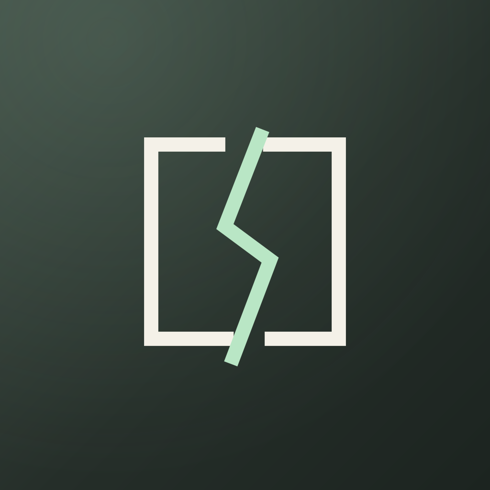

<!doctype html><html lang="zh-CN"><meta charset="utf-8"><title>碎境 · 安装包图标设计</title><style>*{box-sizing:border-box}body{margin:0;background:#F0EFEB;color:#28362F;font:16px/1.6 -apple-system,'PingFang SC',sans-serif}main{padding:54px 64px;width:1400px}h1{font-size:38px;font-weight:500;margin:4px 0 10px}p{margin:0;color:#62756a}small{letter-spacing:3px;color:#62756a}.grid{display:grid;grid-template-columns:512px 1fr;gap:90px;margin-top:38px}img{display:block}aside{padding-top:10px}.shapes{display:flex;gap:32px;margin:22px 0 40px}.shape img{width:164px;height:164px}.round img{border-radius:50%}.squircle img{border-radius:38px}.caption{font-size:14px;margin-top:10px;color:#62756a}.sizes{display:flex;align-items:end;gap:35px;margin-top:22px}.sizes div{min-width:64px}h2{font-weight:500;font-size:20px}.master{width:512px;height:512px;border-radius:100px}.foot{margin-top:24px;font-size:14px}</style><main><small>第一阶段 / 图标设计提案</small><h1>应用入口，只有一个裂隙标记</h1><p>烟灰底色 · 象牙白框线 · 浅绿断面 · 无中英文文字</p><div class="grid"><div><p class="caption">主图示意 · 自定义矢量绘制</p></div><aside><h2>不同遮罩下的辨识度</h2><div class="shapes"><div class="shape round"><p class="caption">圆形遮罩示意</p></div><div class="shape squircle"><p class="caption">圆角遮罩示意</p></div></div><h2>缩小后保留轮廓与裂隙</h2><div class="sizes"><div><p class="caption">96px</p></div><div><p class="caption">64px</p></div><div><p class="caption">48px</p></div><div><p class="caption">32px</p></div></div><p class="foot">前景 / 背景分层；核心标记留在中央安全区域。<br>遮罩仅为设计示意，尚未在 PICO 系统验证。</p></aside></div></main></html>